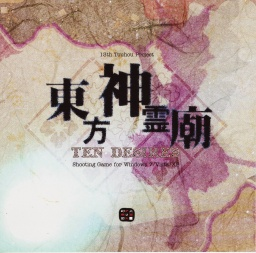
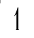
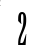
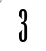

Touhou 12.3 ~ Touhou Hisoutensoku


Touhou Hisoutensoku ~ Choudokyuu Ginyoru no Nazo o Oe (東方非想天則 ～ 超弩級ギニョルの謎を追え, lit. en inglés "Lacking the Perception of the Natural Laws of the East ~
Chase the Enigma of the Gargantuan Guignol") la entrega 12.3 de Touhou Project, creado por Team Shanghai Alice con la colaboración de Twilight Frontier. Es un pack de expansión independiente
para Scarlet Weather Rhapsody con cinco nuevos personajes y tres modos de historias. Sus eventos ocurren después de los de Undefined Fantastic Object; fue desarrollado y lanzado junto a ese juego.
Touhou 12.5 ~ Double Spoiler

Double Spoiler Deflector Doble ~ Touhou Bunkachou Álbum de Palabras Florales (ダブルスポイラー ～ 東方文花帖) es un bullet hell de fotografía con desplazamiento vertical, es
parte de la serie de videojuegos oficiales de Touhou Project correspondiendo la entrega número "12.5". Este título es una secuela de Shoot the Bullet, por lo que tienen conceptos y mecánicas similares.
Touhou 12.8 ~ Great Fairy Wars

妖精大戦争 ～ 東方三月精 (romanizado: Yousei Daisensou ~ Touhou Sangessei, significando "Gran Guerra de las Hadas ~ Las Tres Hadas del Oriente") es un juego de "danmaku congelante" vertical y es el juego 12.8 de la saga. Es una continuación de la historia de Strange and Bright Nature Deity
Touhou 13 ~ Ten Desires

東方神霊廟 ～Ten Desires (romanizado: Touhou Shinreibyou ～ Ten Desires, Lit: "Espíritus divinos, Mausoleo del Este ～ Diez Deseos") es el decimotercer juego oficial de la serie Touhou. El demo se lanzó el 15 de abril, en Internet y luego en el Reitaisai 8, en mayo del 2011. La versión completa fue lanzada en la Comiket 80, el 13 de agosto del 2011.
Touhou 13.5 ~ Hopeless Masquerade

Touhou Shinkirou ~ Hopeless Masquerade (東方心綺楼 ～ Hopeless Masquerade, lit. "Torre Oriental del Corazón de Tela ~ Enmascarado sin esperanza")
Es el 13.5 to juego oficial de la serie Touhou. Es un juego de lucha en 2D que fue anunciado el 5 de octubre de 2012, pero contando por cantidad de juegos este vendría siendo el numero 20 de la lista de los juegos oficiales de la saga de Touhou
Touhou 14 ~ Double Dealing Character

Touhou Kishinjō ~ Double Dealing Character (東方輝針城 ～ Double Dealing Character, lit "Castillo del Este de la Agujas Centellantes ～ Personaje de Doble Interpretación") Este es el número 14 en la lista de juegos de Touhou Project, siendo así el numero 21 de la saga de juegos oficiales sin considerar su numeración. Fue anunciado por ZUN en su blog personal el 11 de mayo de 2013. El 26 de mayo de 2013, en Reitaisai 10, se lanzó una demo jugable que contiene las tres primeras etapas. El juego completo se lanzó el 12 de agosto de 2013 en Comiket 84.
Touhou 14.5 ~ Urban Legend in Limbo

Touhou Shinpiroku
Registro de los Profundos Secretos
~ Urban Legend in Limbo
Leyendas Urbanas en el Limbo
(東方深秘録 ～ Urban Legend in Limbo ) es la entrega oficial número 14.5 de Touhou Project, lanzado el 10 de mayo de 2015. Se lanzó una demo del título el 29 de diciembre de 2014 en el que se incluye a Reimu Hakurei, Marisa Kirisame y Kasen Ibaraki como personajes jugables. Este es el quinto videojuego de lucha en el que colaboran Team Shanghai Alice y Twilight Frontier.
Touhou 15 ~ Touhou: Legacy of the Lunatic Kingdom

Touhou Kanjuden ~ Legacy of Lunatic Kingdom (東方紺珠伝 ～ Legacy of Lunatic Kingdom,literalmente "Cuento oriental del orbe ultramarino.") es la 15ª entrega de Touhou, siendo así el 24 sin tener en cuenta la numeración. Presenta grandes cambios respecto a las entregas anteriores, en especial la introducción del modo Pointdevice, el cual nos permite reintentar cada uno de los "capítulos" en los que se dividen los stages y bosses hasta que consigamos pasarlo. Además, el modo Pointdevice nos permite retomar el juego desde el mismo punto en el que estábamos si queremos tomar un descanso y cerrar el juego.
  